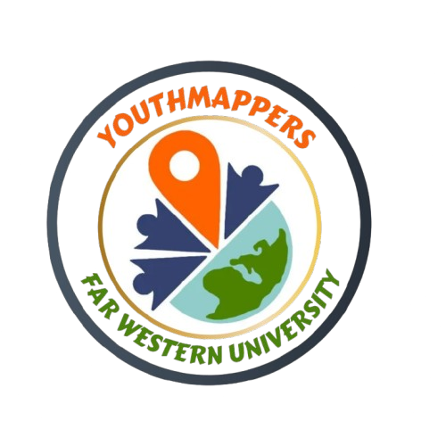
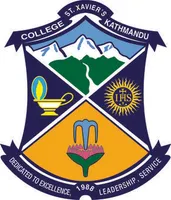
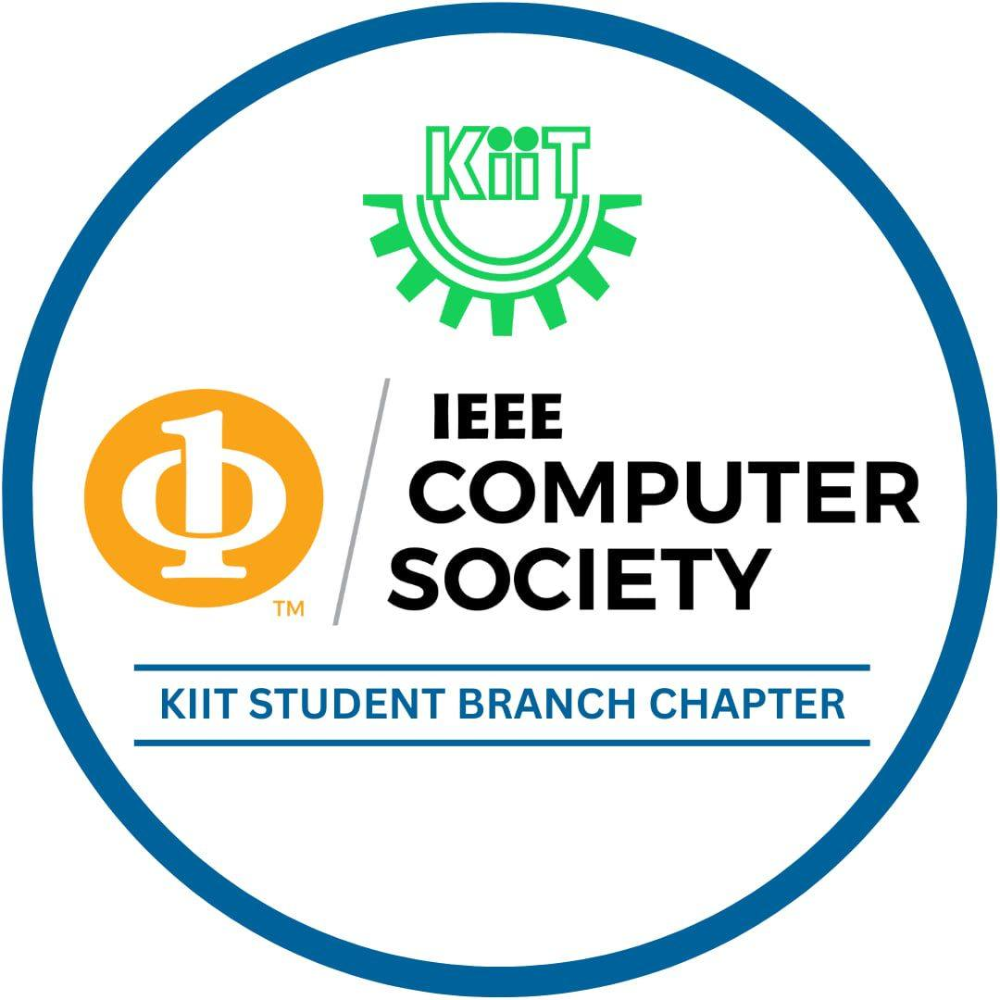
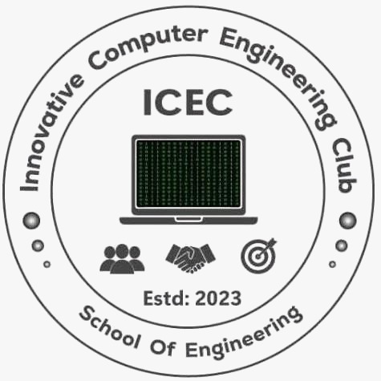
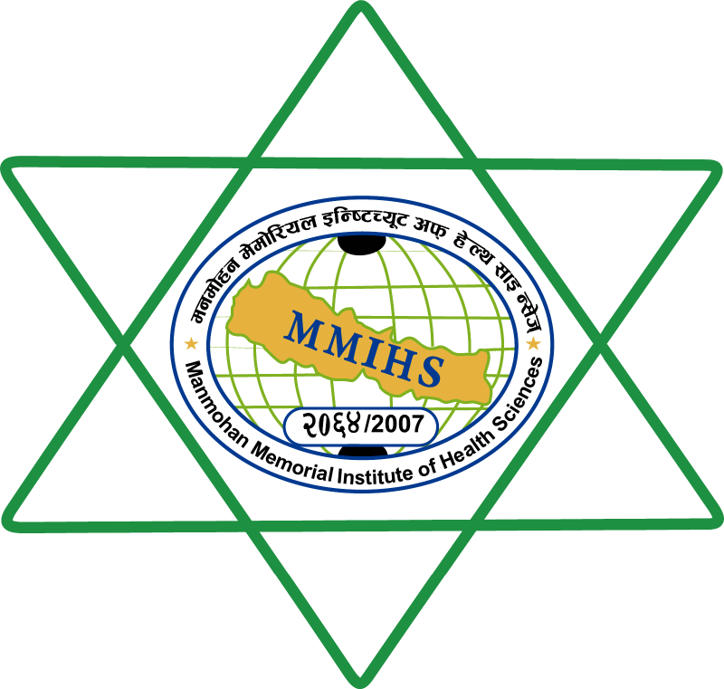

Our Mission
To democratise access to research opportunities for every student in Nepal—regardless of institution, geography, or background—through fellowships, workshops, and sustained mentorship that meet international standards of rigour.

The Nepalese Society of Student Researchers is a catalyst for academic excellence, fostering a culture where inquiry meets integrity.
The Nepalese Society of Student Researchers (NSSR) is a national, student-governed organisation founded to bridge the gap between classroom learning and authentic scientific inquiry. We operate on a simple premise: students are not passive recipients of knowledge—they are active contributors to the research enterprise. By providing structured pathways, direct mentorship, and platforms for dissemination, NSSR transforms curiosity into credible scholarship.
To democratise access to research opportunities for every student in Nepal—regardless of institution, geography, or background—through fellowships, workshops, and sustained mentorship that meet international standards of rigour.
A Nepal where student-led research is recognised as a pillar of national innovation—where young investigators publish in peer-reviewed venues, secure global fellowships, and drive evidence-based solutions for the country's most pressing challenges.
The Nepalese Society of Student Researchers (NSSR) is committed to advancing scientific knowledge, fostering a research-oriented culture, and upholding integrity in every aspect of academic practice.
A structured research pipeline from first curiosity in Research Pathways to a peer-reviewed paper through the NSRF fellowship.
Direct mentorship from national and international researchers, built into every fellowship cohort and pathway.
Nationwide outreach through Science Beyond the Classroom and the Student Empowerment Initiative, carrying scientific literacy past Kathmandu's academic centers.
Inclusivity
Ensuring equal access to educational and scientific opportunities for all researchers, regardless of socio-economic background.
Excellence
Upholding absolute honesty, transparency, and scientific rigor in research, publication, and institutional governance.
Collaboration
Fostering partnerships that align with national priorities and UN global development goals for long-term impact.
Policy Framework
NSSR conducts all activities in accordance with Nepal’s legal framework and international ethical standards. Transparency and civic responsibility are embedded in every project.
“Transparency, accountability, and civic responsibility are embedded in every project, ensuring that science remains a force for progress and public good.”
Fundamental and applied physics, from mathematical ideas to experimental and computational inquiry.
Machine learning, intelligent systems, and data-driven research across disciplines.
Living systems, biodiversity, molecular questions, and biological research methods.
Economic systems, markets, behavior, and quantitative approaches to social questions.











Official Partners • 2025-2026